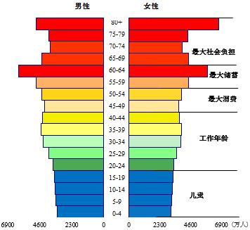
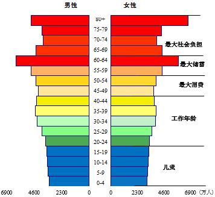

25 Demographics
25.1 China

 

Figure: China Population Pyramid 1950 2019 2050
Batson
The working paper on demographics recently published by the People’s Bank of China is a pretty interesting document, and has gotten more than the usual amount of attention. It doesn’t read much like the cautious, dry and technical papers previously released by this august institution. There’s not much quantitative analysis or rigorous logical argument; it’s more like an extended op-ed, arguing vigorously that major demographic changes for China are coming and that the country needs to wake up to that fact and adapt quickly.
This call to arms is well-timed. It seems likely that the much-delayed figures for China’s 2020 population census will confirm what many demographers have been saying for a while: that China’s fertility rate has been overstated, and therefore that its demographic transition and the aging of its population are going to happen even faster than standard forecasts project.
Batson 2021 Demographics might change everything for China
Hao
Abstract: Since the industrial revolution, the death rate and birth rate have fallen successively, which has created a demographic transition and brought people to the world. Mouth explosion, demographic dividend, aging and declining birthrate. Developed countries, as pioneers in the transition, underestimate people The role of the population and the seriousness of aging and declining birthrates overestimate the importance of education technology, encourage childbirth, and improve the elderly. effect. Since the founding of the People’s Republic of my country, the population of our country has expanded from a rapid growth to a slowdown, and the population structure has grown from a pyramid to a long one. It is square, and our country’s population transition time is shorter, aging is faster, and declining birth rate is more serious. Our country must recognize The demographic situation of the Qing Dynasty has changed. It is necessary to realize that the demographic dividend was used comfortably at the time, and it is a debt that needs to be repaid afterwards; It is necessary to realize that population inertia is a huge force across generations, and its reactionary force will cause the population to change in the opposite direction; Realize that education and technological progress cannot compensate for the decline in population. To this end, we should fully liberalize and encourage childbirth, Really solve the difficulties of women in pregnancy, childbirth, nursery school, and school, comprehensively implement strategies, and work hard for a long time. Now we have a long-term plan for 2035 and a century-old goal.
Memo:
- The transformation of the world population
- The four stages of demographic transition 2 Since the industrial revolution at the end of the eighteenth century and the beginning of the nineteenth century, 3 economic and social development has led to population deaths The birth rate and birth rate have successively declined, but due to the time lag between the two declines, the world has experienced “low growth (I) -Accelerated Growth (II)-Growth Slowdown (III)-Low Growth (IV)” four stages of population transformation. In the first stage (agricultural society before the industrial revolution is usually at this stage), productivity is underdeveloped, and the population is dead. The death rate is high, but in order to maintain the stability of the population size, the birth rate is usually high. This leads to the population age structure Pyramid shape, low dependency ratio for old age, high dependency ratio for children 4, slow economic growth. Phase II (initial and mid-stage of industrialization), with income growth, nutrition, hygiene and medical conditions Improvement, the mortality rate of the population declines rapidly, but the birth rate is usually difficult to follow. This leads to a rapid population size Increase, the population structure develops from a pyramid shape to a rectangular shape 5, that is, the decline in the mortality rate causes the elderly population to occupy The ratio and the proportion of the labor force have risen, pushing the top and middle of the pyramid to widen, but the birth rate has not decreased accordingly. Therefore, the bottom narrowing is not obvious. During this period, both the old-age dependency ratio and the child dependency ratio showed a downward trend. The growth rate is accelerating. In stage III (the middle and late stages of industrialization), the mortality rate of the population further decreased, but the rate of decline decreased. Contrary to what Malthus expected, the birth rate did not increase with the improvement of nutritional conditions, but decreased. (Google Translation)
Hao (2021) Cognition and countermeasures about China’s population transition PBC WP2021/2